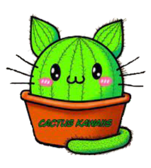

Inicio
Nuestros Productos
Cuidado De Cactus
Sobre CactusKawaiis
Contacto
Contacto
Dirección: Matienzo 1546 entre Cordoba y Pedro Suares. Luis guillon, Buenos Aires
Tambien podes segirme en:
https://www.facebook.com/Daniela.Drogo.Vivero
https://www.instagram.com/cactus_kawaiis/
11-6221-8348